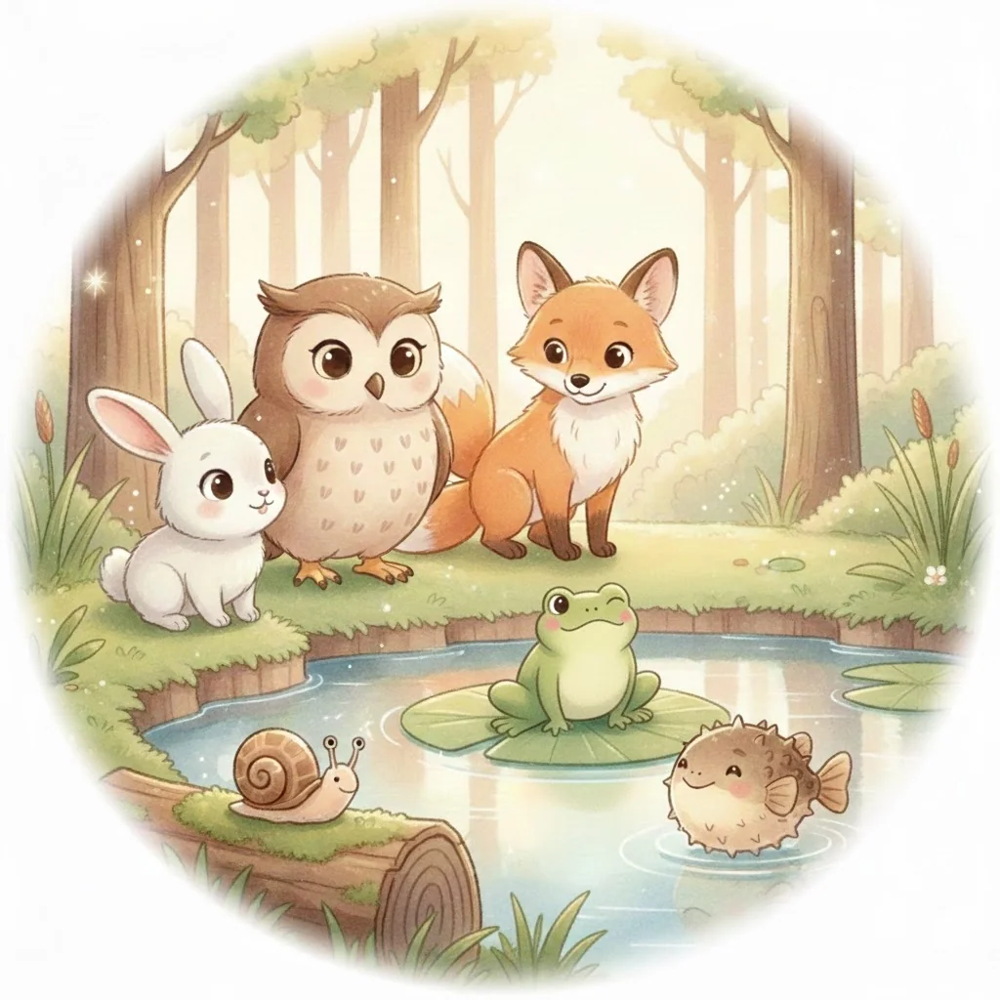
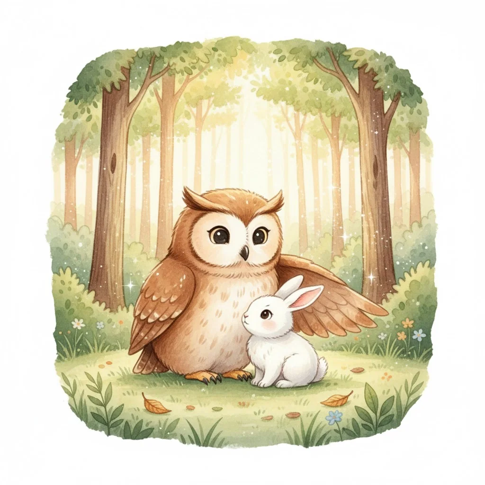
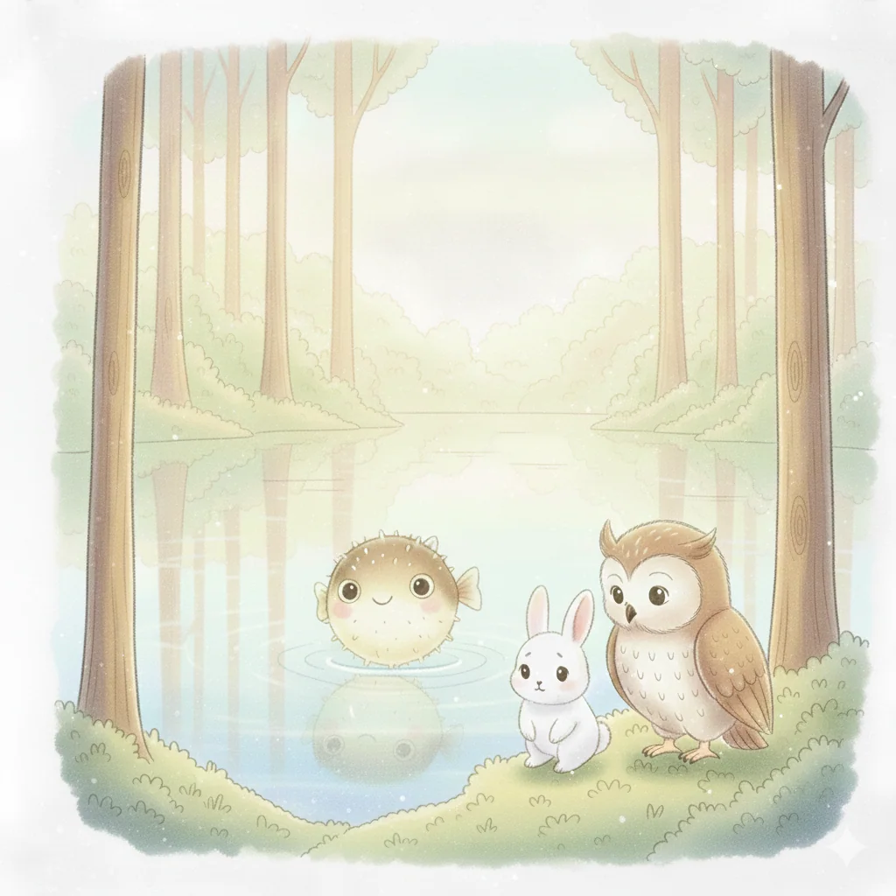
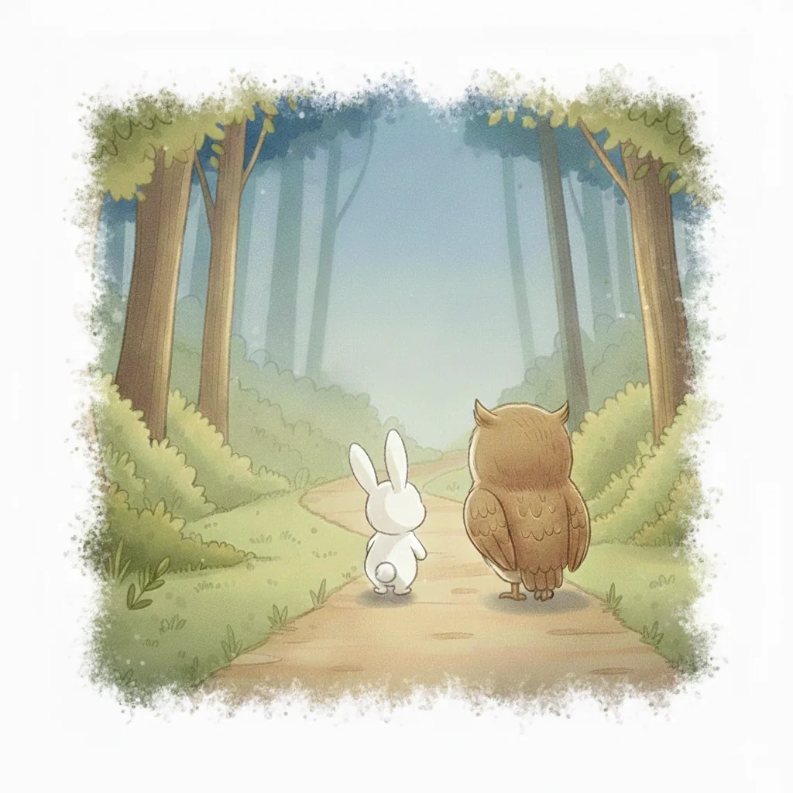

História ilustrada
Quando a Vida Muda de Casa
O Coelhinho percorre uma viagem acompanhada pela Coruja Cuidadora e encontra outras personagens com diferentes experiências de mudança.
Apresentação digital em preparaçãoHistórias e recursos para apoiar crianças em transição para acolhimento, dar espaço às emoções e facilitar o diálogo com quem as acompanha.
Cada criança tem a sua história. Cada emoção merece ser escutada.

Ilustração original do livroQuando a Vida Muda de Casa é um projeto psicoeducativo desenvolvido para apoiar crianças que vivenciam processos de transição para acolhimento familiar ou residencial.
Através de narrativas ilustradas e recursos adaptados ao desenvolvimento infantil, procura facilitar a compreensão das mudanças, reconhecer emoções e apoiar a comunicação entre crianças e adultos de referência.
Conhecer os objetivosVárias formas de abordar uma mudança, respeitando a idade, o ritmo e as necessidades de cada criança.

O Coelhinho percorre uma viagem acompanhada pela Coruja Cuidadora e encontra outras personagens com diferentes experiências de mudança.
Apresentação digital em preparação
Uma versão com linguagem e ritmo adaptados à infância pré-escolar, valorizando a segurança, o acompanhamento e a expressão emocional.
Leitura interativa em desenvolvimentoMateriais complementares que podem apoiar a conversa, a expressão e a compreensão das emoções.
Personagens e propostas criativas para explorar sentimentos e experiências.
Em preparaçãoAtividades e perguntas de apoio ao diálogo, respeitando o tempo da criança.
Em preparaçãoRecursos imprimíveis e sugestões de exploração das histórias.
Em preparação
Os recursos foram pensados para serem utilizados com acompanhamento adulto, num espaço de escuta, diálogo e respeito pelas circunstâncias de cada criança.
Nesta área serão disponibilizadas orientações de utilização, sugestões de atividades e materiais de apoio.
Guiões e recomendações em preparaçãoFacilitar a compreensão das mudanças e dos processos de transição para acolhimento.
Promover a identificação, expressão e validação das emoções.
Favorecer a comunicação entre crianças e adultos de referência, sem atribuir à criança a responsabilidade pelas dificuldades dos adultos.
Avaliar a aceitabilidade, adequação, exequibilidade e intenção de utilização dos recursos.
Um espaço para acompanhar a evolução dos recursos e, futuramente, partilhar apresentações, publicações e resultados autorizados da investigação.
Espaço reservado a novidades sobre adaptações da história e recursos complementares.
Conteúdos a publicarFutura divulgação da metodologia e dos resultados, após as validações e autorizações necessárias.
Conteúdos a publicarÁrea destinada a pósteres, comunicações científicas e outros materiais de disseminação.
Conteúdos a publicarPara informações sobre o projeto, recursos ou possíveis colaborações, entra em contacto.
Contactar o projeto